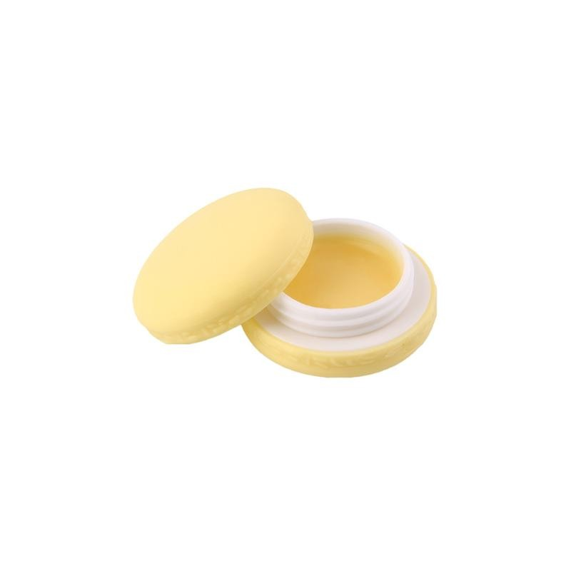

Welcome to gyvūnėlių parduotuvė
Gyvūnėlių Reikmenys
2020.10.29 11:04Susisiekite su mumis Prisijungti shopping_cart Krepšelis (0) Parduotuvė Sveikata ir Grožis Mobilūs Priedai Virtuvei ir namams Gyvūnėlių Reikmenys Apranga ir Aksesuarai Kūryba ir Dovanos Automobilių Priedai Juvelyrika ir laikrodžiai Vaikams ir Žaislai Batai Ir rankinės Burnos Priežiūra D.U.K Siuntų sekimas Apie mus Pagrindinis Gyvūnėlių Reikmenys Gyvūnėlių Reikmenys GERAI
Filtruoti pagal
Išvalyti viskąGyvūnėlių Reikmenys
Gyvūnėlių Reikmenys
Rasta 10 prekės(-ių).
Rikiuoti pagal: Aktualumas Aktualumas Pavadinimas, A - Z Pavadinimas, Z - A Kaina, mažiausia - didžiausia Kaina, didžiausia - mažiausia Filtras Rodoma 1-10 iš 10 prekės(-ių)Aktyvūs filtrai
Silikoninės Gyvūnų Šukos
Kaina 8,57 EUR Greita peržiūra Balta VioletinėDantis Valantis Kramtymo...
Kaina 9,97 EUR Greita peržiūra Raudona MėlynaPlaukų Šalinimo Šepetys
Kaina 7,52 EUR Greita peržiūraNaminių Gyvūnų Nagų Dildė
Kaina 6,38 EUR Greita peržiūraŠuns Pavadėlis
Kaina 7,12 EUR Greita peržiūraŽuvytė Žaislas Katėms
Kaina 5,56 EUR Greita peržiūraLED šuns Apykaklė
Kaina 6,54 EUR Greita peržiūra Raudona Oranžinė Mėlyna Žalia Rožinė AuksinėPlaukus surenkanti pirštinė
Kaina 8,95 EUR Greita peržiūraSuper Mielas kačių ir šunų...
Kaina 3,57 EUR Greita peržiūraRyklio Galva Šuns Guolis
Kaina 30,12 EUR Išpardavimas! Greita peržiūra Pilka Mėlyna Rožinė Rodoma 1-10 iš 10 prekės(-ių) Atgal į viršų Gaukite mūsų naujienas ir specialius išpardavimus
Produktai
Produktai Naujos prekės Perkamiausios prekėsApie mus
Apie mus Pristatymas Prekių grąžinimas Susisiekite su mumisParduotuvės informacija
ParduotuvėLietuva
Parašykite: info@pirko.lt Parduotuvės informacija
© 2020 - Pirko.lt
